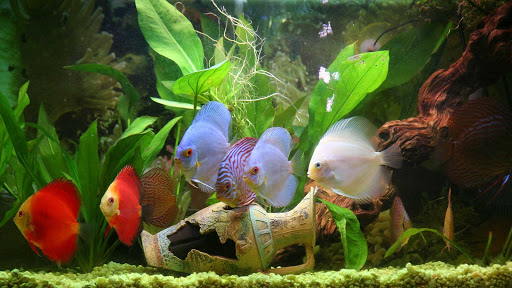
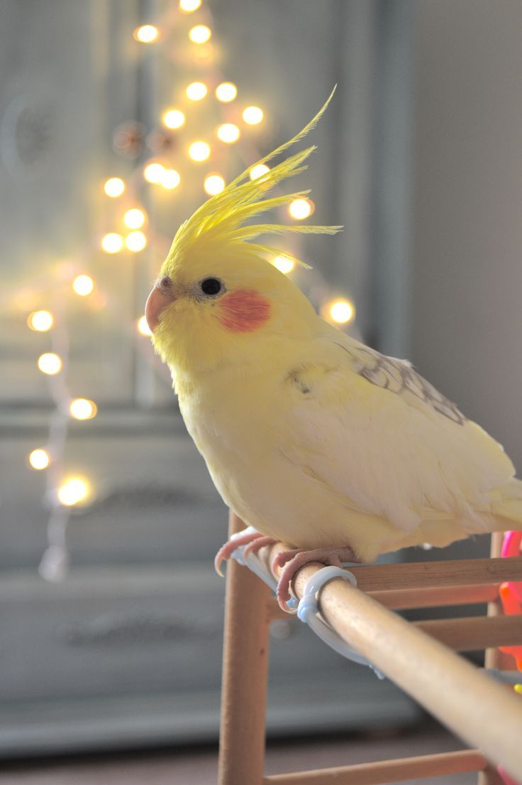
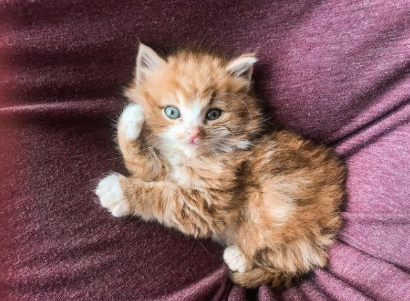

How to choose the right pet:
Animals are one of the greatest joys to have in our lives. These animals-our pets-become members of our families as they should. Whether we choose to adopt a cat, dog, rabbit, fish, bird, hamster, or guinea pigs, knowing that we provide that animal with the best care that it needs is an important aspect of being a pet caretaker. But it's also about the individual animal. Therefore, it's important to make sure you have the time, space, energy and money to take care of a pet.
Here is a list of pets to consider.
Fish. Choose an aquatic pet if you enjoy a tranquil pet that does not require constant physical interaction. Beware that not all fish are easy to care for. Some fish types will live happily in a low-maintenance aquarium or pond, whilst others like goldfish, can get ill if the pH balance is off. Goldfish are also more susceptible to illnesses like white spot, so make sure to research the species you want before you set up an aquarium. Fish are often thought to have a calming effect: simply watching them swim around may help reduce anxiety and stress.
Birds. Consider an avian pet if you'd like an intelligent, life-long partner in crime. Birds are by far the longest living domesticated pet. Large birds can live for decades while smaller birds can live up to two years. They are also highly intelligent and are easy to care for. They don't require much attention from you but will need environmental stimulation through toys or interaction with you. Birds can also be very nurturing and even show empathy.
Reptiles. Understand that having a reptile as a pet is very different from keeping a mammal or any other domesticated pet. You'll need to have extensive knowledge about your pet: everything from adaptation, behavior, and the environment, to nutrition, camouflage, and reproductive strategies. You'll also need to research any laws regarding the particular species in your state.
.png)
Rodents. This can be a great option if you want an active, small, and relatively inexpensive pet. Common pet rodents include hamsters, guinea pigs, rats, mice, gerbils, and chinchillas. Beware that some rodents, like rats, can not live on their own and will need an either same sex or neutered companion. Other rodents, like some types of hamsters, live best on their own. Research the different rodents to see if the one you want will need a friend. Some rodents (such as mice and rats) can even be trained to follow commands and perform tricks.
.png)
Cats and Dogs. These large, social, mammalian pets can be a very rewarding choice if you are able to give them a lot of attention. Cats and dogs are the most popular type of pet. They also are also typically very social and high-energy, and they more attention than almost any other domestic animal. Understand what it means to own a dog or a cat.
To find out more about choosing the right animal Click here!